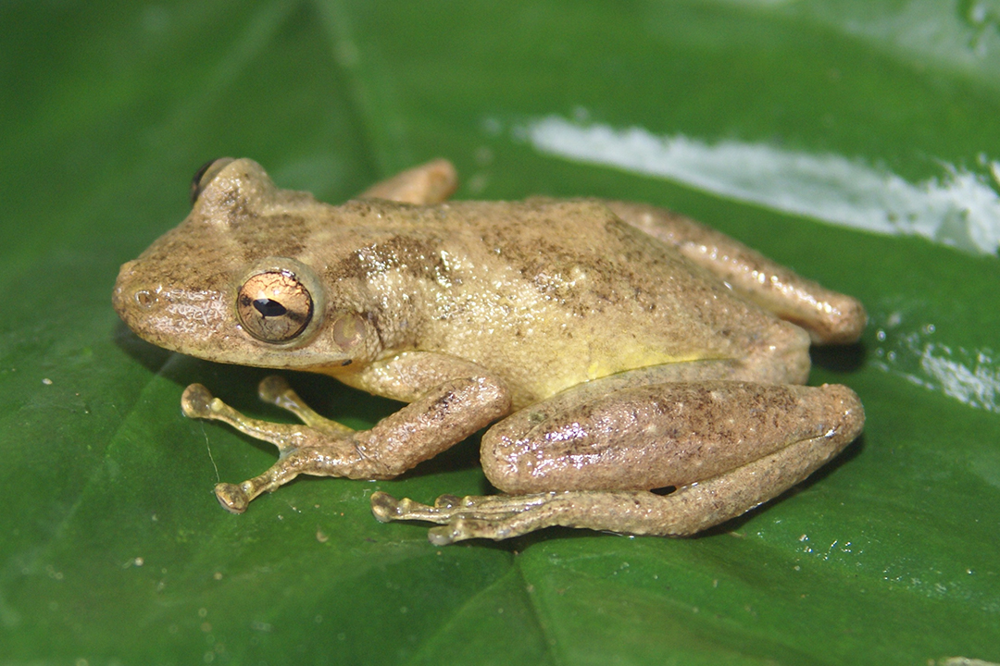
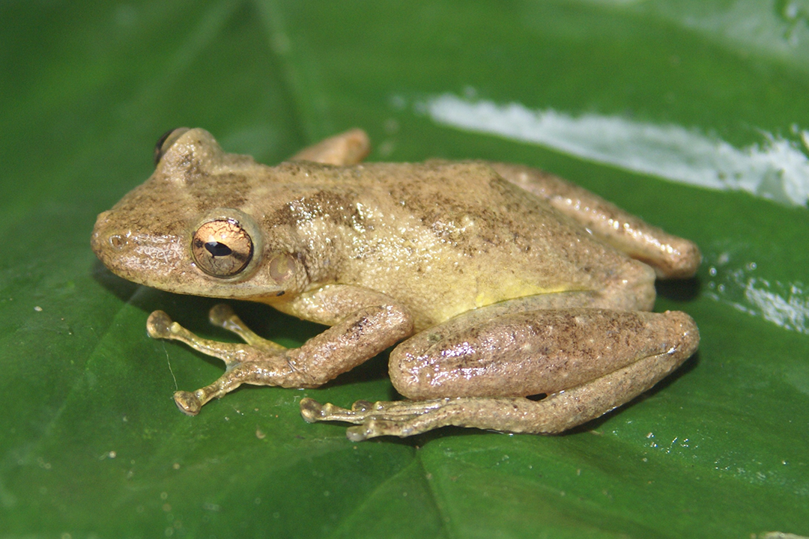
 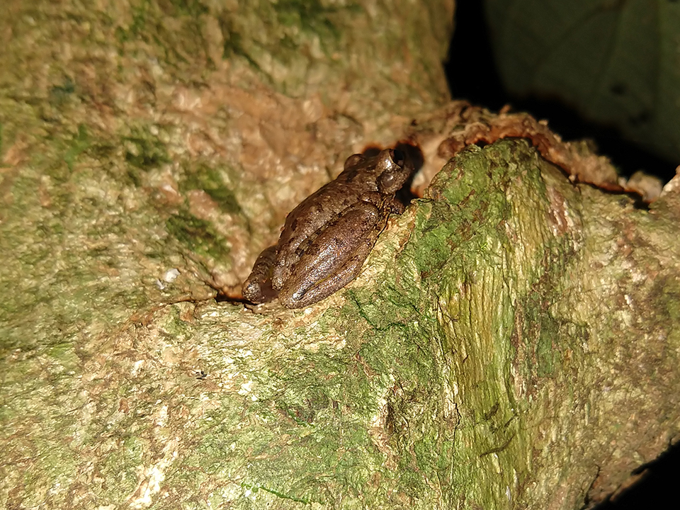
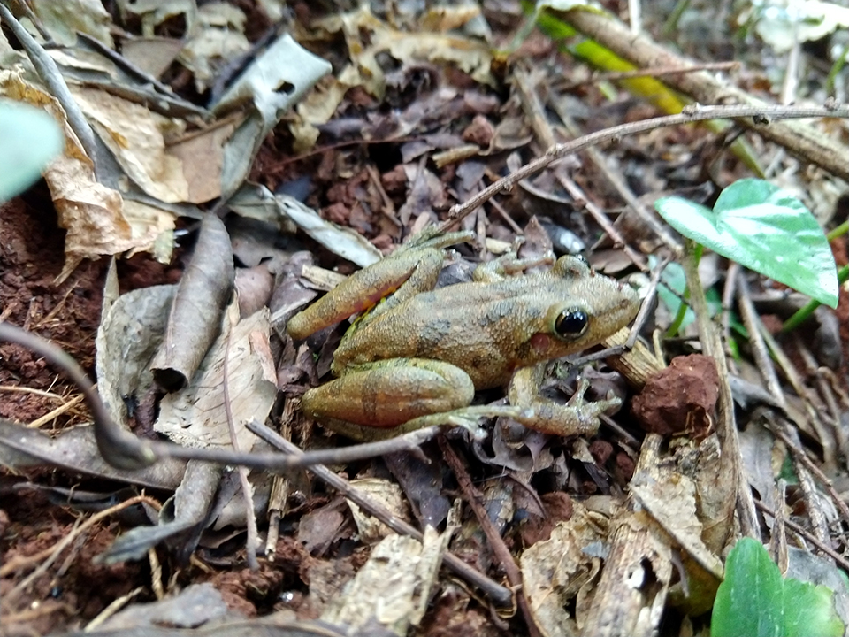
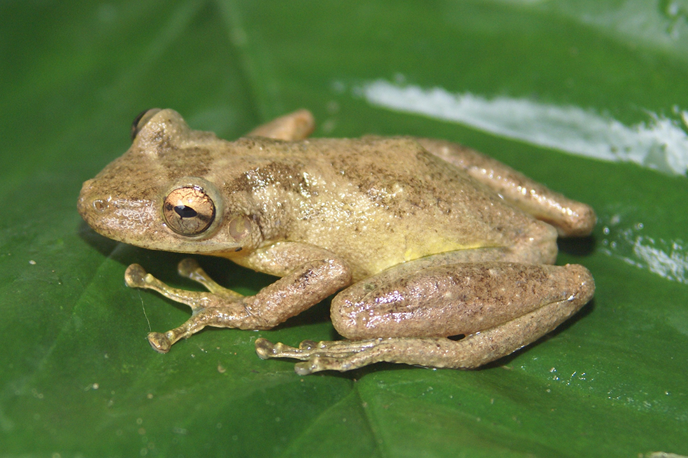
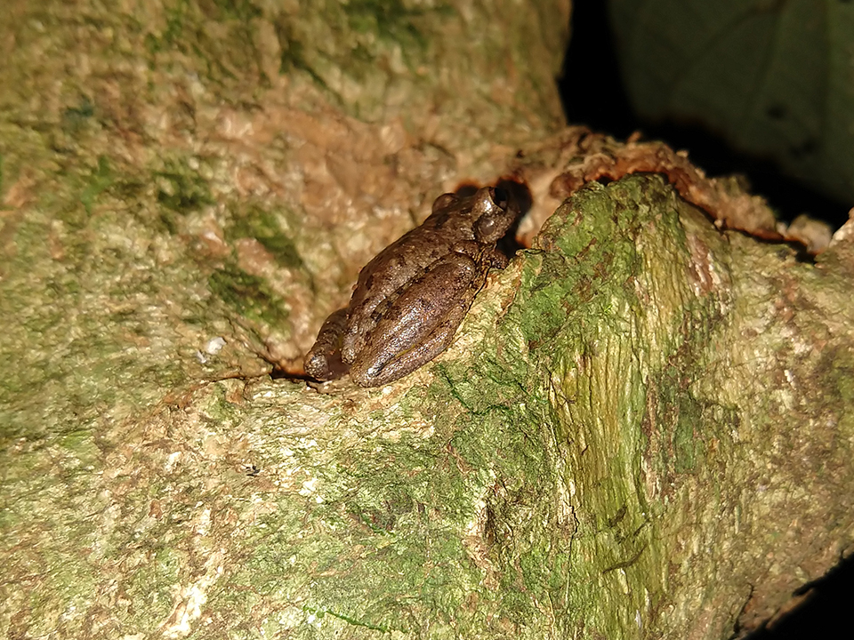
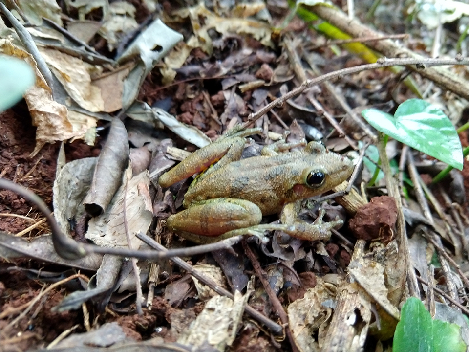
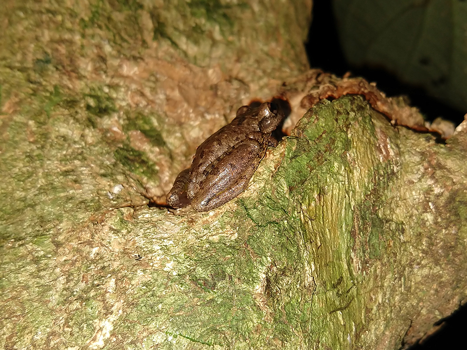
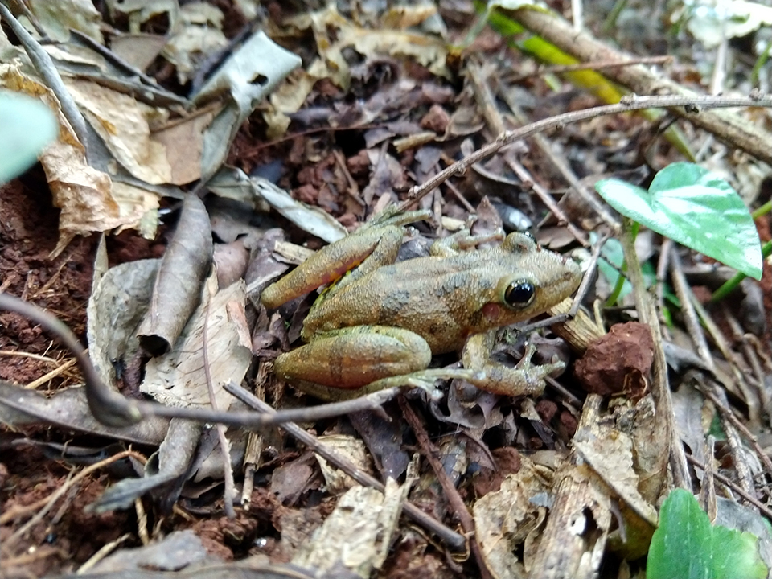
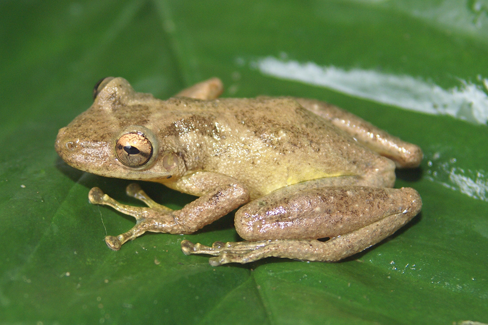
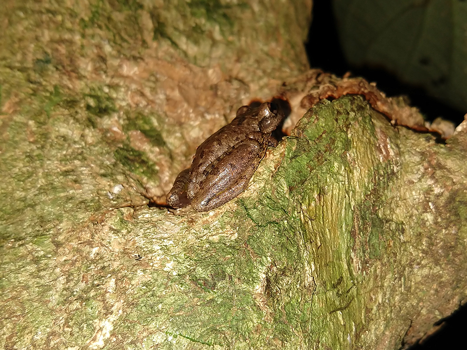
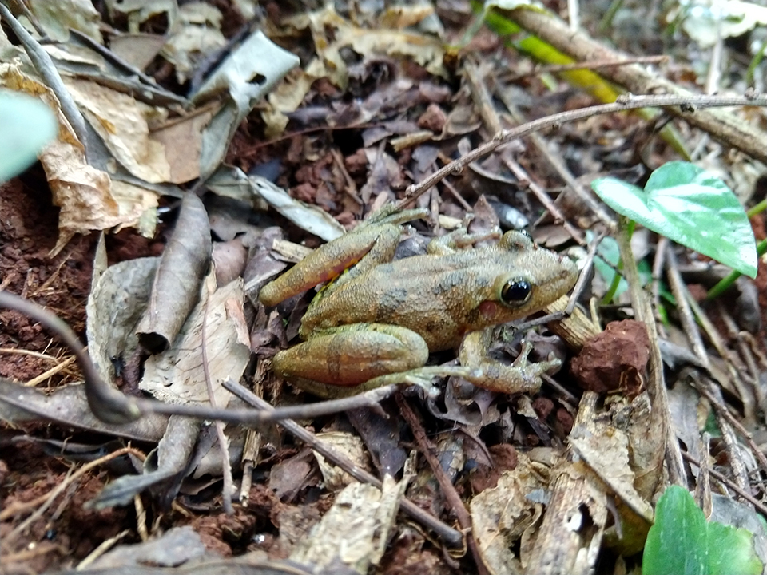
Coloração castanho escuro ou acinzentado nas costas, parte interna das cochas e cintura são amarelas com manchas pretas. Espécie arborícola, ocorre em ambientes abertos e vocaliza de dentro da água de lagoas, açudes e banhados onde reproduz. Põe seus ovos sobre a vegetação em água parada. Fora da época reprodutiva pode ser encontrada em árvores, arbustos ou dentro e residências. Não possui veneno e foi registrada nos estados de RS, SC, PR, MG, RJ, ES, BA, GO, TO, MS e MT.